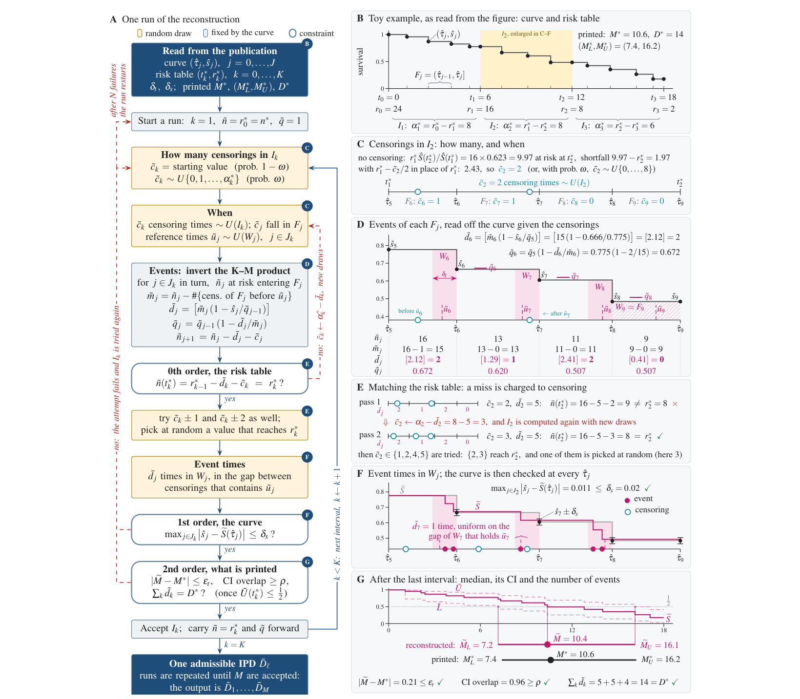

StochIKM: Automated High-Fidelity Reconstruction of Individual Patient Data from Published Kaplan–Meier Curves

Individual patient data are the gold standard for secondary analysis of time-to-event evidence, but they are rarely released, and reconstruction from a published Kaplan–Meier figure could help. Existing methods all claim high fidelity, each judged by whichever agreements it happens to achieve, and each returns a single dataset although the map from figure to data is not bijective. We define fidelity explicitly: a dataset is admissible when it reproduces the risk table exactly, follows the digitized curve to within the image resolution, and respects the printed median, interval and event count. We propose StochIKM, a stochastic algorithm that digitizes the figure with a vision-capable language model and uses the high-fidelity definition as constraints, returning an admissible set of individual patient datasets. A solution is guaranteed to exist whenever the figure has been read correctly, so a failure indicts either the published figure or its digitization. In simulation and in 79 arms from published oncology trials, StochIKM reproduces the published risk tables and medians more closely than LLM-improved IPDfromKM (Liu et al., 2021), a high-impact alternative.
> open arXiv:2610.29122